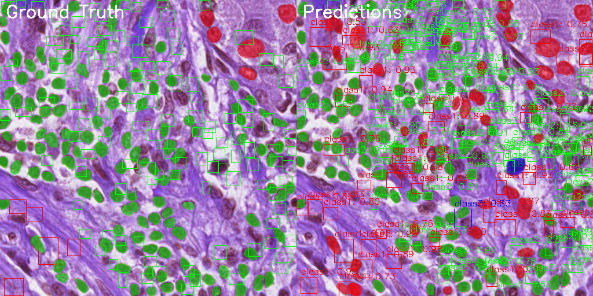
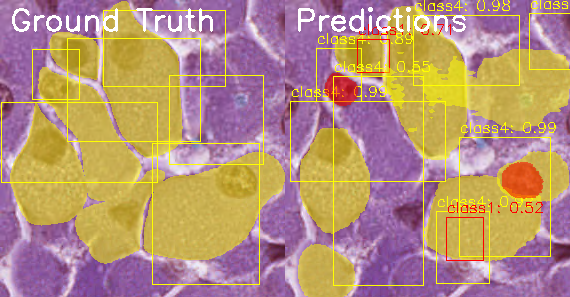

Challenging Examples
Examples with low IoU (poor segmentation)
Sample 2 (IoU: 0.371)
Sample 7 (IoU: 0.465)
Sample 11 (IoU: 0.467)
Sample 14 (IoU: 0.042)

Examples with high IoU (good segmentation)
Examples with low IoU (poor segmentation)
| Class | Precision | Recall | F1 Score | Average IoU | True Positives | False Positives | False Negatives |
|---|---|---|---|---|---|---|---|
| class1 | 0.763 | 0.401 | 0.526 | 0.305 | 345 | 107 | 516 |
| class2 | 0.919 | 0.498 | 0.646 | 0.337 | 592 | 52 | 596 |
| class3 | 0.767 | 0.939 | 0.844 | 0.615 | 46 | 14 | 3 |
| class4 | 0.737 | 0.875 | 0.800 | 0.590 | 14 | 5 | 2 |
This report provides a comprehensive evaluation of the cell segmentation model. Key observations: